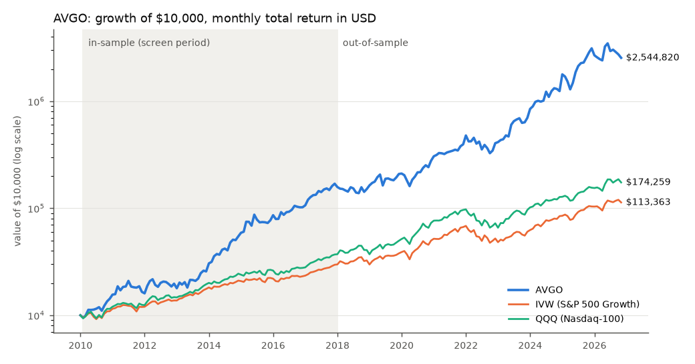
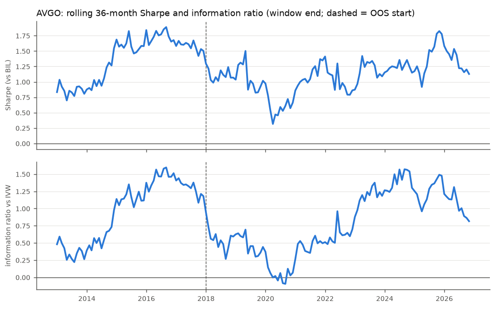

AVGO Broadcom Inc.
US growth stock | US | | Technology / Semiconductors
How to explain this pick
- AVGO is a semiconductor and infrastructure-software company built by acquisition; a screen using only data to 2017 picked it for the second-best in-sample composite (41% a year, Sharpe 1.4 in 2010-2017; its 2017 fundamentals came from current statements, not data to 2017).
- From 2018 to 2026-10, which the screen never saw, it returned 37.0% a year against 16.3% for the S&P 500 Growth fund, with a worst fall of -32% (fund -30%).
- Our models expect about 11% a year over the next seven years (5-95% range -5% to 31%), so it is one of our two core US picks, with the warning that most of its return came from the AI build-out.
Track record: in-sample vs out-of-sample
| USD, monthly total return | In-sample 2010-01 to 2017-12 | Out-of-sample 2018-01 to 2026-10 |
|---|---|---|
| CAGRCompound annual growth rate: the steady yearly return that would produce the same end value. | 41.2% | 37.0% |
| VolatilityAnnualised standard deviation of monthly returns: the typical size of the swings. | 27.9% | 36.4% |
| Sharpe ratioReturn earned above the T-bill rate for each unit of volatility (ups and downs). Higher is better; 0.5 is decent, 1.0 is strong. | 1.38 | 0.98 |
| Max drawdownThe worst peak-to-trough fall in month-end value. A -25% drawdown turns $100 into $75 before it recovers. | -23.5% | -31.7% |
| Information ratioHow much a holding beat its benchmark per unit of the risk it took by differing from it (active return divided by tracking error). Above 0.5 is good, but it needs a t-statistic above about 2 to be believable. | 0.97 | 0.72 |
| t-statisticHow many standard errors an average is away from zero. Above about 2 the result is unlikely to be luck; below 1 it is indistinguishable from noise. | 2.74 | 2.15 |
| Deflated SharpeThe probability that the Sharpe ratio is real after allowing for how many candidates were tried. Test dozens of names and the best one looks good by luck; 0.95 or more is convincing, below 0.5 is a coin flip. | 0.96 | 0.76 |
| Tracking errorHow much a holding's returns differ from its benchmark's, as an annual standard deviation. Low means it behaves like the benchmark. | 25.0% | 29.2% |
| BetaHow strongly the holding moves with its benchmark: 1.0 moves one-for-one, 2.0 doubles the swings. | 1.03 | 1.18 |
| AlphaAnnual return left after accounting for beta, i.e. what the holding added beyond its benchmark's movement. | 23.8% | 18.6% |
Benchmark out-of-sample Sharpe for this type (IVW): 0.77.
In-sampleThe 2010-2017 data that every screen and shortlist was built from. Good in-sample numbers say little about the future, so they sit beside the out-of-sample ones to show how much held up.: the screen was built on these years. Out-of-sampleData the selection never saw. Here: Jan 2018 to Oct 2026, with every screen built only from data up to Dec 2017.: the judging years.
Currency: local vs USD
| Currency | In-sample | Out-of-sample |
|---|---|---|
| Return in local currencyReturn in the asset's home currency compared with the dollar return the US investor gets. The difference is the currency effect. | n/a | 37.0% |
| Currency effect (FX) | n/a | 0.0% |
| Return in USD | n/a | 37.0% |
| FX share of varianceHow much of a foreign holding's dollar volatility comes from currency moves rather than the asset itself. | n/a | 0.0% |
Expected 7-year return
| capm | 9.9% |
|---|---|
| dcf | 16.1% |
| grinold kroner | 8.2% |
| monte carlo median | 11.5% |
| Consensus (USD, per year)The middle of at least two forward models (CAPM, discounted cash flow, Grinold-Kroner, yield). An estimate with a wide range, not a forecast. | 11.4% |
| 5th to 95th percentile | -5.0% to 30.8% |
Fundamentals (latest filings)
| Revenue (USD bn) | 63.89 |
|---|---|
| Net income (USD bn) | 23.13 |
| Free cash flow (USD bn) | 26.91 |
| Revenue growth (3-year CAGR) | 24.4% |
| Net income growth (3-year CAGR) | 26.2% |
| Operating margin | 39.9% |
| Operating margin change (3 years) | -3.0% |
| Return on invested capital | 19.3% |
| Net debt / EBITDA | 2.00 |
| Free cash flow yield | 1.9% |
| Trailing P/E | 61.57 |
| P/E relative to its 5-year median | 1.39 |
Screen scores at 2017 and technicals
| Fundamental score (0-1) | 0.59 |
|---|---|
| Revenue growth (3-year CAGR) | 24.4% |
| Net income growth (3-year CAGR) | 26.2% |
| Return on invested capital (ROE for financials) | 20.0% |
| Operating margin | 40.8% |
| Operating margin change (3 years) | -2.2% |
| Net debt / EBITDA | 1.40 |
| Free cash flow yield | 1.9% |
| Trailing P/E | 61.57 |
| P/E relative to its 5-year median | 1.00 |
| Growth score | 0.72 |
| Quality score | 0.50 |
| Valuation score | 0.50 |
| T1 momentum (12-1 months) | 59.3% |
| T2 above 200-day average (1 = yes) | 1.00 |
| T3 6-month relative strength | -1.0% |
| T4 12-month volatility | 24.1% |
| T5 distance below 52-week high | -9.1% |
| In-sample composite score | 0.85 |
| In-sample rank | 2 |
| of | 46 |
No technical signal was kept for any type (out-of-sample test, Method page), so there is no technical score.
Charts


Stress testThe total return over a past crisis window; for the portfolio, what today's holdings would have lost. (USD total return over each window)
| Window | Dates | AVGO | Benchmark | QQQ |
|---|---|---|---|---|
| GFC 2008 | 2007-10-31 to 2009-02-28 | n/a | -45.4% | -49.7% |
| Taper tantrum 2013 | 2013-04-30 to 2013-08-31 | 21.2% | 3.2% | 7.1% |
| Covid crash 2020 | 2020-01-31 to 2020-03-31 | -21.0% | -16.4% | -12.9% |
| Inflation and rate shock 2022 | 2021-12-31 to 2022-10-31 | -27.7% | -27.4% | -29.8% |
| Strong USD (average month) | 24 months | 0.4% | -2.6% |
Reviewer verdict and claims
| Claim checked | Result | Evidence |
|---|---|---|
| OOS Sharpe 0.98, IR 0.72 (t 2.2) | pass | 0.978 / 0.724 / t 2.15 (NW 2.60). Alpha t only 1.85. t 2.15 does not survive a Bonferroni correction for picking among the 8 (one-sided 5% z=2.24): moderate evidence. |
| Every 36-month OOS window has positive IR | pass | 71 of 71 windows ending 2020-12..2026-10, min IR 0.27. |
| -32% drawdown close to IVW -30% | pass | -31.7% vs -30.5%. It still breaks the -25% budget; 'best risk-adjusted name for the security budget' overstates. |
| Top in-sample composite (rank 1) | fail | The 2017 fundamental score (50% of the composite) is built from FY2025 yfinance statements (fy_end 2025-10-31, fundamentals_pit False): look-ahead. With a neutral fundamental score AVGO ranks 5th; with the ROE bug fixed 2nd. Still in the top 8, so the selection survives, but 'picked by a screen using only data to 2017' is untrue for AVGO. |
| Forward consensus 14% | pass | 14.4%. G-K repricing +4.3%/yr from forward P/E 15.1 (forward EPS 2.5x trailing GAAP). If G-K starts from trailing P/E 37.5 the repricing is -4.8%/yr and the consensus is 11.4%; without repricing 13.0%. |
Reviewer note. Edge in both halves (2018-22 IR 0.54 t 1.2; 2023-26 IR 0.91 t 1.8). The spike filter alters two genuine AVGO days (2020-03-18; 2024-07-31, a month end): OOS Sharpe 0.978 filtered vs 0.986 raw, immaterial. Keep; fix the wording.
Runners-up in this type, and why they lost
- META Meta Platforms, Inc. (rank 4, rubric 47.5, OOS Sharpe 0.51, review: pass). META's drawdown and its 2022 loss are the worst of the type; its forward estimate does not compensate.
- MA Mastercard Incorporated (rank 5, rubric 57.7, OOS Sharpe 0.72, review: downgrade). MA has the smallest drawdown and the best 2022, but the reviewer downgraded the 'defensive' label (it fell more than the index in the Covid window) and its information ratio is weak, so under the pre-registered rule it ranks after the three passes. It is the natural substitute if John wants a lower-volatility US sleeve.
Only NVDA and AVGO beat IVW on out-of-sample Sharpe, and NVDA's edge is one regime with a deep drawdown, so the optimizer must keep it small. Faded leaders fell from in-sample ranks 10-18 to 43-46: the 2017 screen did not find the 2018-2026 winners.
Also screened but not picked or not runner-up: GILD (not picked), ADBE (not picked), REGN (not picked).
Analyst memo: verdict and risks
Verdict. Keep, ranked second: OOS Sharpe 0.98 and IR 0.72 (t 2.2), every 36-month OOS window with positive IR. Its -32% worst drawdown is close to the index's -30% but still breaks the -25% security budget, so it too needs a capped weight. Forward consensus 11% (13% without the assumed de-rating from a trailing P/E of 37.5 to 23); its 2017 screen data could not be checked point-in-time.
Risks. Concentration in a few AI customers, a capex downturn, acquisition debt, and a trailing P/E near 60 that already prices the AI ramp. The 2017 fundamentals are not point-in-time (Singapore-domiciled until 2018; the current CIK starts then): its 2017 fundamental score was built from current statements, so the 2017 screen was not data-to-2017 only for this name.
Source: reports/candidates/AVGO.json. Reproduce: python -m research.candidates.us_growth --ticker AVGO --write